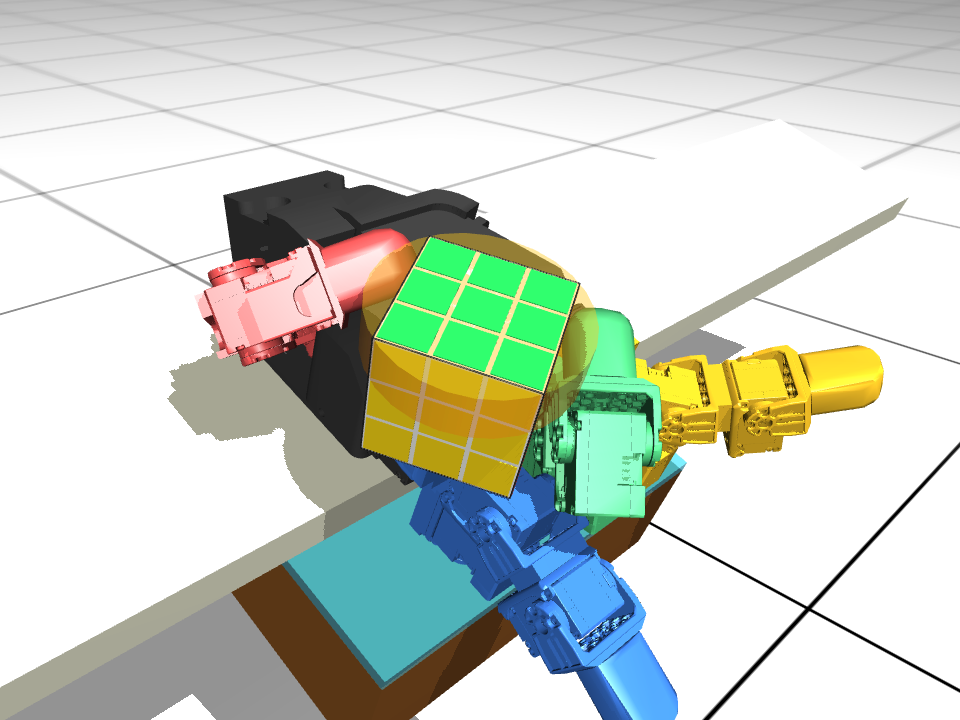
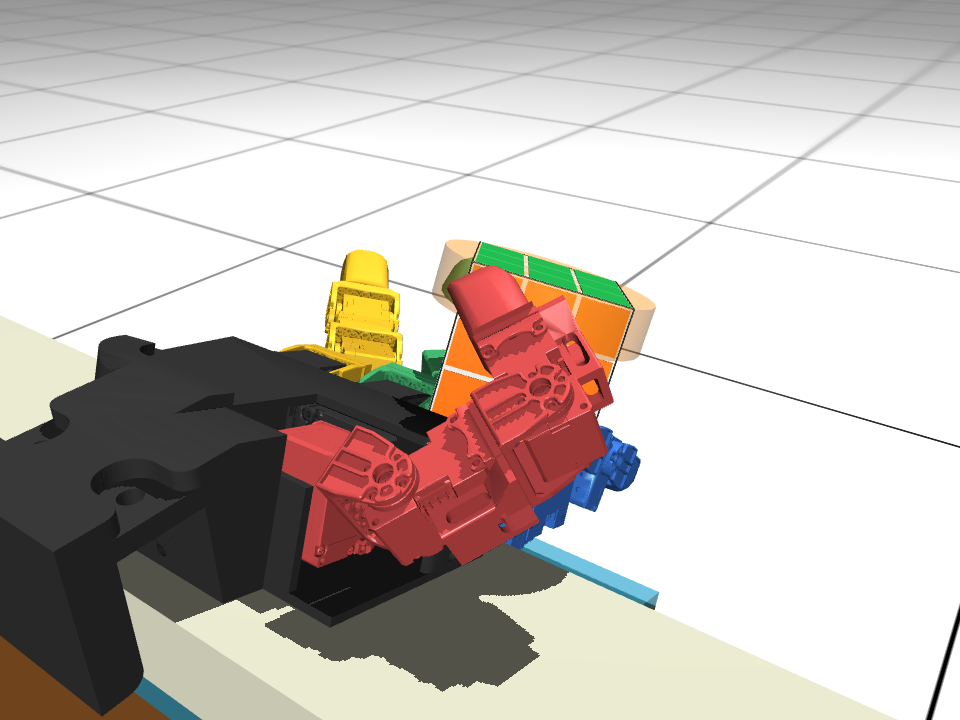
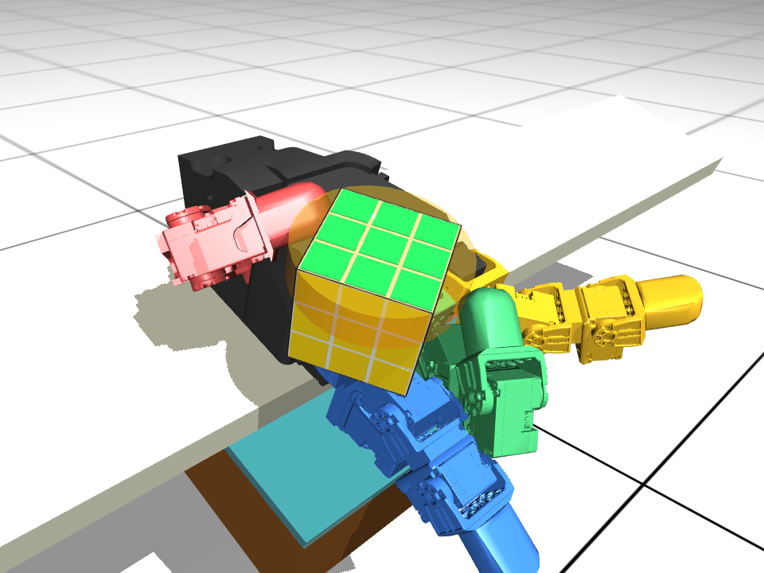
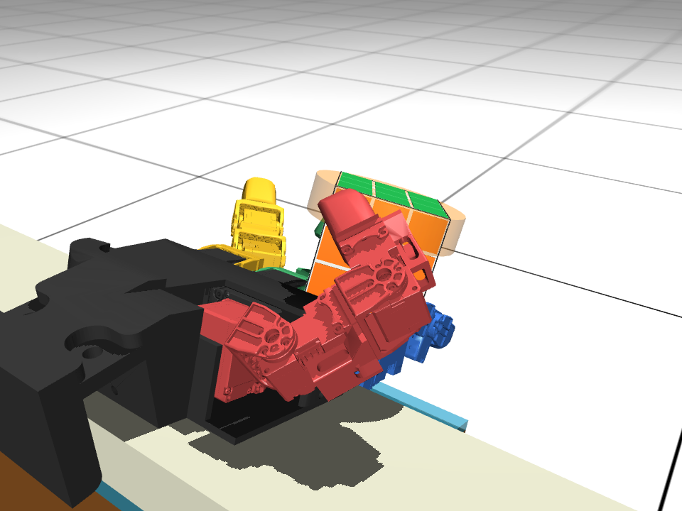
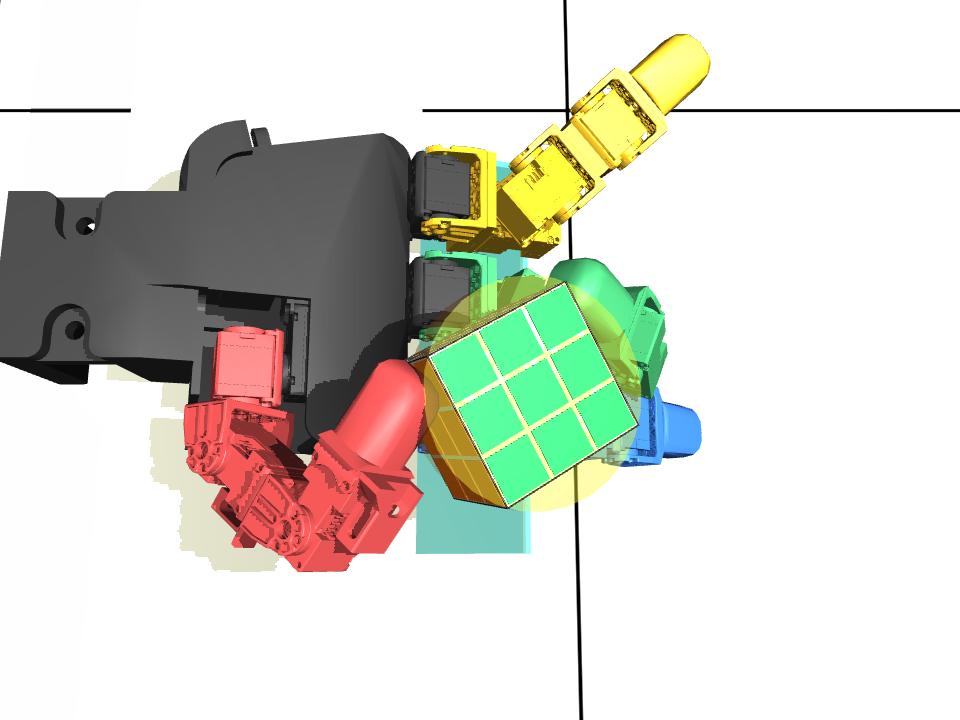
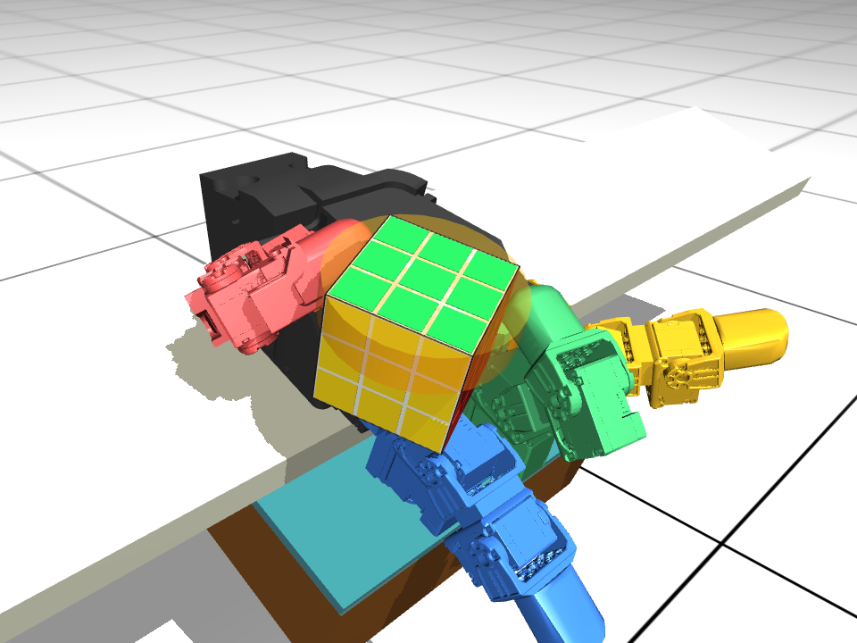
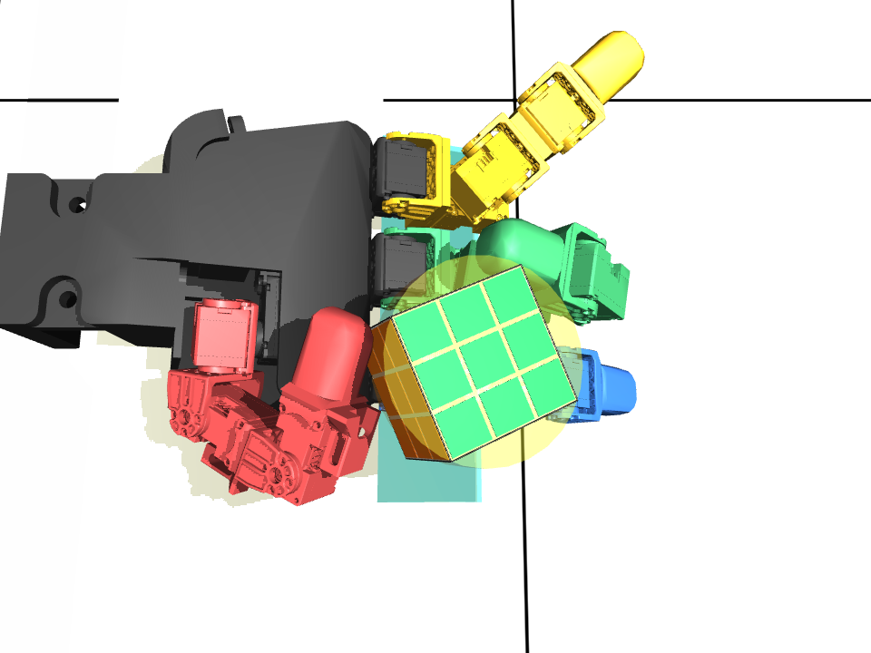
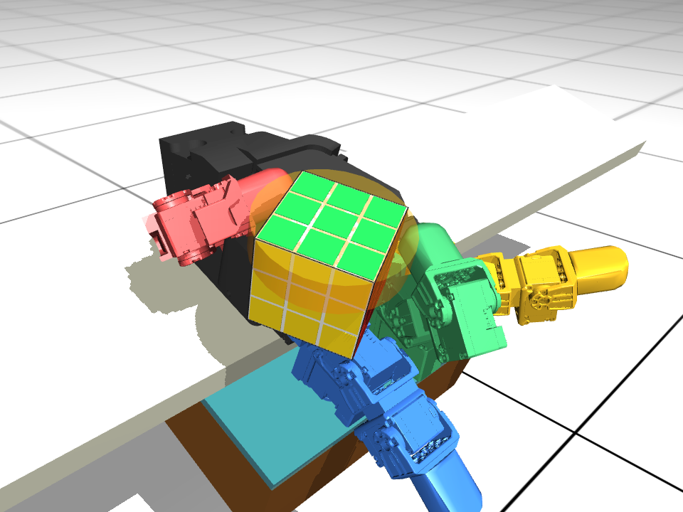
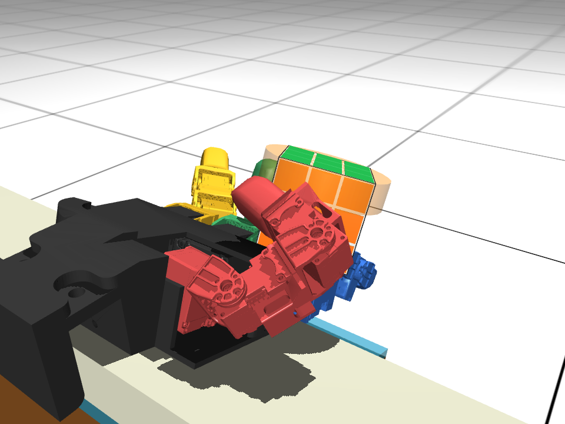
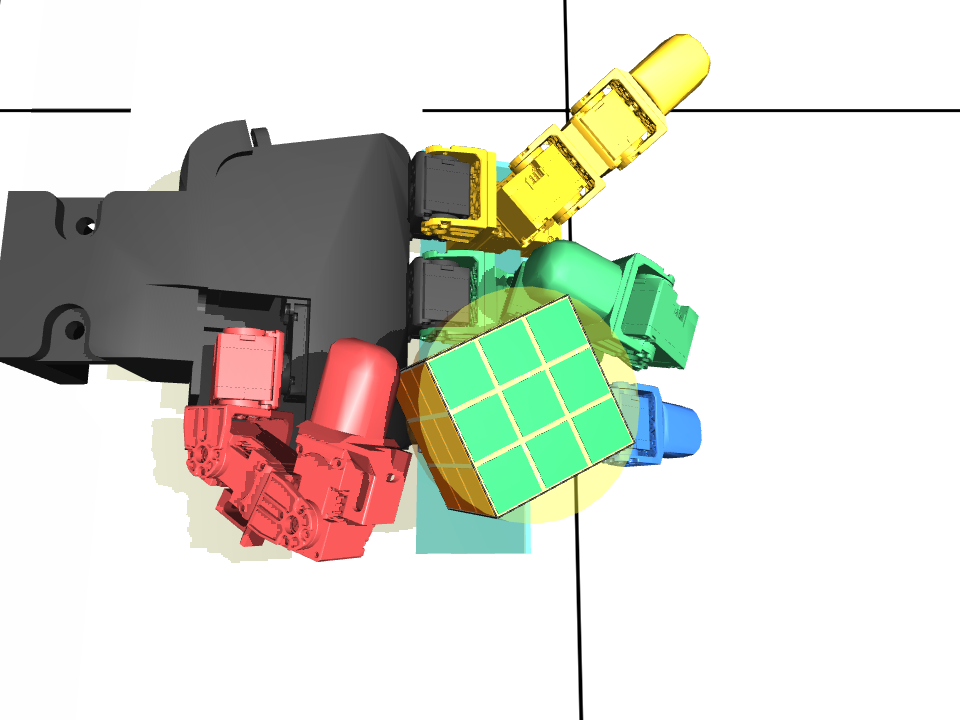

파랑=검지, 초록=중지, 노랑=약지, 빨강=엄지. 주황색 반투명 원통은 55mm 큐브의 윗단을 90도 회전할 때 필요한 공간이다.
실물 성공을 뜻하는 그림이 아니다. 중지 50% 및 100% 그림은 다른 관절과 큐브를 고정한 모양 비교로, 파지력이나 움직일 수 있는 경로의 증거가 아니다. 사용자 기록을 참고하되 토크 OFF로 손이 처진 각도를 그대로 새 목표로 사용하지 않는다.
기존 파지는 기준 모델에서 10.05초 유지됐지만, 중지와 엄지 일부가 윗단 공간에 들어와 있었다. 목표는 공간을 비운 상태에서도 큐브 하부 접촉과 자세가 유지되는 것이다. 관절 범위와 충돌 기준을 넓히지 않았다.









